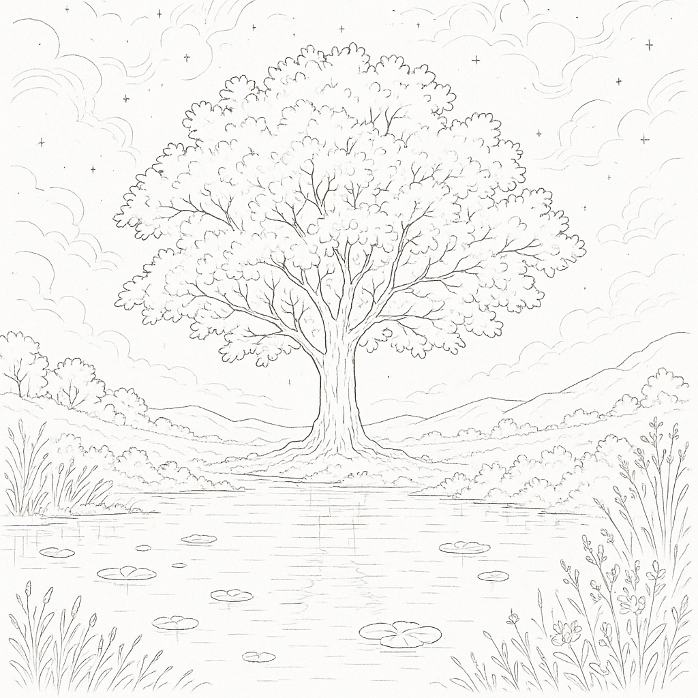

ControlNet: Revolutionizing AI Image Generation with Precise Control

Introduction
ControlNet represents a groundbreaking advancement in the field of AI-generated imagery, providing unprecedented control over the output of diffusion models like Stable Diffusion. Developed by researchers at Stanford University and released in early 2023, ControlNet has fundamentally changed how artists, designers, and developers approach AI image generation by enabling precise spatial control while maintaining the creative power of the underlying diffusion model.
Unlike traditional text-to-image generation where users rely solely on prompts and hope for desired compositions, ControlNet introduces conditional inputs that guide the generation process through various control mechanisms such as edge maps, depth maps, pose detection, and semantic segmentation. This innovation bridges the gap between creative intent and AI output, making AI image generation more predictable and professionally viable.
Technical Architecture
Core Concept
ControlNet operates as an additional neural network architecture that works alongside pre-trained diffusion models. Rather than modifying the original model weights, ControlNet creates a parallel pathway that processes control inputs and injects spatial guidance into the generation process. This approach preserves the original model’s capabilities while adding new functionality.
The architecture consists of two main components:
- Trainable Copy: A duplicate of the encoding layers from the original diffusion model
- Zero Convolution Layers: Special convolution layers initialized to zero that gradually learn to incorporate control information
How ControlNet Works
The ControlNet process follows these key steps:
- Control Input Processing: The control image (edge map, depth map, etc.) is processed through the trainable copy of the original model’s encoder
- Feature Integration: Zero convolution layers combine the control features with the original model’s features
- Guided Generation: The combined features guide the denoising process, ensuring the output adheres to the spatial constraints while maintaining semantic coherence
This design is particularly elegant because it allows the original model to retain its learned knowledge while gradually incorporating new control information through the zero-initialized layers.
Types of ControlNet Models
Canny Edge Detection
The Canny ControlNet is one of the most popular and versatile control methods. It uses the Canny edge detection algorithm to create line drawings that preserve the structural composition of reference images.
- Converting sketches to detailed artwork
- Maintaining architectural layouts
- Preserving character poses and proportions
- Creating variations while keeping composition intact
Canny edge detection identifies areas of rapid intensity change in images, creating clean line drawings that capture essential structural information without color or texture details. The ControlNet then uses these edges as spatial constraints during generation.
Depth Map Control
Depth ControlNet utilizes depth information to control the three-dimensional structure of generated images. This is particularly powerful for architectural visualization and scene composition.
Applications:
- Interior design visualization
- Landscape generation with specific topography
- Product placement in 3D space
- Architectural rendering
Implementation: Depth maps are typically generated using models like MiDaS (Monocular Depth Estimation) or can be manually created in 3D software. The depth information is encoded as grayscale images where darker pixels represent closer objects.
OpenPose Human Detection
The OpenPose ControlNet focuses specifically on human pose control, using skeletal keypoint detection to guide the generation of human figures in specific poses.
- 18 keypoint skeleton detection
- Hand and face pose estimation
- Multi-person pose control
- Precise gesture and posture control
Professional Applications:
- Fashion photography concepts
- Sports pose illustration
- Dance and movement studies
- Character design and animation pre-visualization
Scribble Control
Scribble ControlNet allows users to provide rough sketches or scribbles as control input, making it highly accessible for quick concept development.
Advantages:
- No artistic skill required
- Rapid prototyping
- Intuitive control method
- Compatible with touchscreen devices
Semantic Segmentation
This ControlNet variant uses semantic segmentation maps where different colors represent different object categories (sky, trees, buildings, etc.).
Professional Use Cases:
- Landscape composition planning
- Urban planning visualization
- Environmental concept art
- Scene layout design
Normal Map Control
Normal maps provide surface detail information, allowing for precise control over lighting and surface textures in generated images.
Applications:
- Product visualization
- Material design
- Texture synthesis
- 3D rendering enhancement
Line Art (Lineart)
Specialized for clean line drawings, this ControlNet excels at converting anime-style line art into fully rendered illustrations.
Strengths:
- Anime and manga artwork
- Technical illustrations
- Clean vector-style outputs
- Precise line preservation
Advanced ControlNet Techniques
Multi-ControlNet Workflows
One of ControlNet’s most powerful features is the ability to combine multiple control types simultaneously. This enables complex, multi-layered control over the generation process.
- Canny + Depth: Structural control with 3D spatial awareness
- OpenPose + Canny: Human pose with environmental structure
- Depth + Semantic Segmentation: 3D layout with object placement control
- Normal Map + Canny: Surface detail with edge preservation
Implementation Considerations: When using multiple ControlNets, careful weight balancing is crucial. Each ControlNet has a weight parameter (typically 0.0 to 2.0) that determines its influence on the final output. Higher weights increase control strength but may reduce creative flexibility.
ControlNet Preprocessing
Preprocessing is critical for optimal ControlNet performance. Each control type requires specific preprocessing to generate appropriate control images:
| Control Type | Preprocessing Parameters | Notes |
|---|---|---|
| Canny | Low threshold: 100 High threshold: 200 Gaussian blur: Optional |
Captures fine details and strong edges |
| Depth | Depth estimation model Depth range normalization Smoothing |
MiDaS, DPT model selection |
| OpenPose | Model selection Keypoint confidence Hand/face detection |
OpenPose, MediaPipe, DWPose |
Regional Control Techniques
Advanced users can implement regional control by masking different areas of the control input, allowing for varied control strength across different parts of the image.
Methods:
- Masked ControlNet: Apply different control types to different regions
- Gradient Masks: Gradual transition between controlled and uncontrolled areas
- Layered Control: Stack multiple control influences with different regional masks
Professional Workflows and Applications
Concept Art and Pre-visualization
ControlNet has revolutionized concept art workflows by enabling rapid iteration and precise control over composition and lighting.
- Create rough 3D blockout or sketch
- Generate depth map and normal map
- Use ControlNet to generate multiple style variations
- Refine with additional ControlNet passes
- Final polish with traditional digital painting techniques
Architectural Visualization
Architects and designers use ControlNet to quickly generate photorealistic renderings from technical drawings and 3D models.
Process:
- Export line drawings from CAD software
- Create depth maps from 3D models
- Generate semantic segmentation for material control
- Use multi-ControlNet setup for comprehensive control
- Iterate on lighting and atmosphere with prompt variations
Fashion and Product Design
ControlNet enables precise product placement and modeling scenarios without expensive photoshoots.
Applications:
- Virtual try-on visualization
- Product catalog generation
- Fashion pose and styling exploration
- Marketing material creation
Film and Animation Pre-production
The film industry uses ControlNet for storyboarding, concept development, and pre-visualization.
Benefits:
- Rapid scene composition testing
- Character pose and expression studies
- Environment and set design exploration
- Visual effects planning
Technical Implementation
Model Training and Fine-tuning
Understanding ControlNet training helps users optimize their workflows and create custom control types.
- Dataset Preparation: Paired images with corresponding control inputs
- Architecture Setup: Clone base model encoder layers
- Zero Convolution Initialization: Initialize control injection layers to zero
- Gradual Training: Slowly introduce control influence while preserving base model knowledge
- Validation: Test on diverse control inputs and prompts
Custom ControlNet Training: Organizations can train custom ControlNets for specific use cases:
- Industry-specific control types
- Style-specific guidance
- Domain-adapted models
Integration with Existing Pipelines
ControlNet integrates with various AI art platforms and tools:
Popular Integrations:
- Automatic1111 WebUI: Comprehensive ControlNet extension
- ComfyUI: Node-based workflow integration
- InvokeAI: Professional-grade implementation
- Diffusers Library: Python API integration
- Krita Plugin: Direct integration with digital painting software
Hardware and Performance Considerations
ControlNet requires additional computational resources compared to standard diffusion model inference.
- VRAM: 6-8GB minimum, 12GB+ recommended for multi-ControlNet
- Processing Power: Modern GPU with CUDA support
- Storage: Additional space for ControlNet model files (1.5-5GB each)
- Model quantization for reduced VRAM usage
- Attention slicing for memory efficiency
- Batch processing for multiple generations
- Control strength adjustment for performance tuning
Best Practices and Tips
Control Weight Optimization
Finding the right balance between control strength and creative freedom is crucial for professional results.
| Control Strength | Weight Range | Description |
|---|---|---|
| High Control | 1.0-1.5 | Precise reproduction, minimal deviation |
| Medium Control | 0.7-1.0 | Good balance of control and creativity |
| Low Control | 0.3-0.7 | Loose guidance, high creativity |
| Subtle Control | 0.1-0.3 | Gentle influence, maximum flexibility |
Prompt Engineering with ControlNet
Effective prompting becomes even more important when using ControlNet, as the prompt must work harmoniously with the control input.
Strategies:
- Descriptive Consistency: Ensure prompts match control input content
- Style Specification: Clear artistic direction (photorealistic, artistic, etc.)
- Negative Prompting: Exclude unwanted elements that might conflict with control
- Weight Balancing: Balance prompt influence with control influence
Quality Control and Iteration
Professional workflows require consistent quality and the ability to iterate effectively.
- Multiple generation passes with slight variations
- A/B testing different control strengths
- Systematic prompt variations
- Post-processing integration planning
Limitations and Considerations
Technical Limitations
- Control Precision: Cannot guarantee pixel-perfect reproduction of control inputs
- Model Compatibility: Trained for specific base models
- Computational Overhead: Resource-intensive multi-ControlNet workflows
Creative Limitations
- Over-reliance on Control: Excessive control can limit AI’s creative potential
- Control Conflicts: Multiple control inputs may conflict with each other
- Learning Curve: Requires understanding of preprocessing techniques and parameter tuning
Future Developments and Trends
Emerging Control Types
Research continues to expand ControlNet capabilities with new control modalities:
- Audio-to-Visual Control: Synchronizing image generation with audio inputs
- Temporal Control: Video generation with frame-to-frame consistency
- 3D Scene Control: Full 3D scene understanding and control
- Style Transfer Control: Precise artistic style application
Integration Advancements
- Real-time Processing: Optimization for real-time creative workflows
- VR/AR Integration: Spatial computing applications
- Cloud-based Solutions: Accessible high-performance processing
- Mobile Optimization: Smartphone and tablet compatibility
Professional Adoption
Industries are increasingly integrating ControlNet into professional pipelines:
- Architecture and Construction: Automated rendering from technical drawings
- Entertainment Industry: Rapid concept art and pre-visualization
- Marketing and Advertising: Dynamic content creation
- Education and Training: Visual learning material generation
Conclusion
ControlNet represents a paradigm shift in AI image generation, transforming it from a creative experiment to a professional tool capable of precise, predictable outputs. Its ability to bridge the gap between human creative intent and AI capability has opened new possibilities across industries, from entertainment and architecture to fashion and marketing.
The technology’s modular design, allowing multiple control types to work in concert, provides unprecedented flexibility for creative professionals. As the ecosystem continues to evolve with new control modalities, better integration tools, and improved performance optimization, ControlNet is positioned to become an indispensable part of the modern creative workflow.
Success with ControlNet requires understanding both its technical capabilities and creative possibilities. By mastering the balance between control and creativity, understanding the strengths and limitations of different control types, and developing efficient workflows, users can harness ControlNet’s full potential to create compelling, professionally viable AI-generated imagery.
The future of AI-assisted creativity lies not in replacing human creativity but in augmenting it with precise, controllable tools like ControlNet. As these technologies continue to mature, they promise to democratize high-quality visual content creation while empowering professionals to achieve new levels of creative expression and productivity.